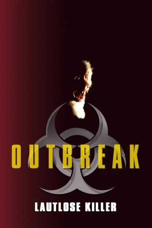
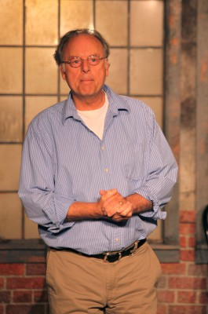
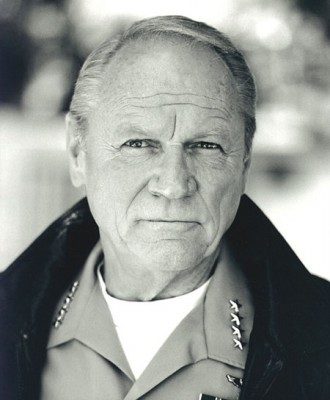
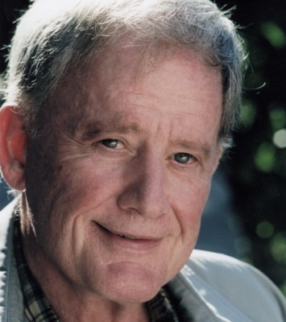

#474 Outbreak - Lautlose Killer
Alternativ: Outbreak
 
 IMDB-Wertung: 6.6 / 10
IMDB-Wertung: 6.6 / 10  Metascore: 65
Metascore: 65 
Der US-Virologe und Militärarzt Sam Daniels untersucht in Afrika einen neuartigen Virus, der innerhalb weniger Tage zum Tod führt. Es handelt sich um eine aggressive, sich schnell verbreitende Ebola-Variante. Daniels kann nur ahnen, welche Gefahr von der Seuche ausgeht und rechnet mit dem Schlimmsten. Zurück in Amerika bittet er seinen Freund und Vorgesetzten Brig. Gen. Billy Ford vorsorglich Katastrophenalarm auszulösen, doch der will davon nichts wissen. Erst als erste Symptome der todbringenden Infektion in der amerikanischen Kleinstadt Cedar Creek auftreten, folgt das böse Erwachen. Daniels ist sich sicher, dass es sich um den afrikanischen Killervirus handelt und begibt sich mit seinem Team sofort in die kalifornische Ortschaft. Während sich die Epidemie im ganzen Land auszubreiten droht, machen sich Daniels und seine Leute auf die Suche nach dem ursprünglichen Überträger des Virus, um einen Impfstoff herzustellen und der Seuche Einhalt zu gebieten...
Jahr: 1995
Dauer: 127 Minuten
FSK: 12
Land: USA Studio: Warner Bros.Tonspuren:
Untertitel: Deutsch,
Auflösung: 1080p (1920x1080) Größe: 10342 MB
Genre: Action, Drama, Thriller
Regisseur:  Wolfgang Petersen
Wolfgang Petersen
Drehbuch: Laurence Dworet, Robert Roy Pool
Soundtrack: James Newton Howard
Darsteller:
 Dustin Hoffman als Sam Daniels
Dustin Hoffman als Sam Daniels Rene Russo als Robby Keough
Rene Russo als Robby Keough Morgan Freeman als General Billy Ford
Morgan Freeman als General Billy Ford Kevin Spacey als Casey Schuler
Kevin Spacey als Casey Schuler Cuba Gooding Jr. als Major Salt
Cuba Gooding Jr. als Major Salt Donald Sutherland als General Donald McClintock
Donald Sutherland als General Donald McClintock Patrick Dempsey als Jimbo Scott
Patrick Dempsey als Jimbo Scott- Zakes Mokae als Dr. Benjamin Iwabi
 Malick Bowens als Dr. Raswani
Malick Bowens als Dr. Raswani- Susan Lee Hoffman als Dr. Lisa Aronson
 Benito Martinez als Dr. Julio Ruiz
Benito Martinez als Dr. Julio Ruiz-  Bruce Jarchow als Dr. Mascelli
 Dale Dye als Colonel Briggs
Dale Dye als Colonel Briggs- Michelle Joyner als Sherry Mauldin
 Tim Ransom als Tommy Hull
Tim Ransom als Tommy Hull Maury Sterling als Sandman One
Maury Sterling als Sandman One- Michael Emanuel als Sandman One Co-Pilot
 Diana Bellamy als Mrs. Pananides
Diana Bellamy als Mrs. Pananides- Lance Kerwin als American Mercenary
- Billy Stevenson als Biotest Guard
- Kellie Overbey als Alice
- Herbert Jefferson Jr. als Boston Doctor #1
 Thomas Crawford als Boston Doctor #2
Thomas Crawford als Boston Doctor #2- Ina Romeo als Mrs. Logan
 Jane Jenkins als Nurse Jane
Jane Jenkins als Nurse Jane- Carmela Rappazzo als Hospital Receptionist
 Robert Alan Beuth als George Armistead
Robert Alan Beuth als George Armistead Gordon Michaels als Man in Line
Gordon Michaels als Man in Line- Peter Looney als White House Counsel
-  Conrad Bachmann als California Governor
- Cynthia Harrison als Co-Anchor
- Marcus Hennessy als Station Manager
 George Christy als Senator
George Christy als Senator-  Jim Antonio als Dr. Drew Reynolds
 Bruce Holman als Aide to White House Chief-of-Staff Seated Against Wall , uncredited
Bruce Holman als Aide to White House Chief-of-Staff Seated Against Wall , uncredited- Jack Kyle als Doctor , uncredited
 Beau Lotterman als Army Major , uncredited
Beau Lotterman als Army Major , uncredited- David Novak als Diplomat , uncredited
- Ross Turner als Townsperson , uncredited
 J.T. Walsh als Chief of Staff , uncredited
J.T. Walsh als Chief of Staff , uncredited- Leland Hayward III als Henry Seward
- Daniel Chodos als Rudy Alvarez
- Kara Keough als Kate Jeffries
- Gina Menza als Mrs. Jeffries
- Per Didrik Fasmer als Mr. Jeffries
- Donald Forrest als Mack Mauldin
- Julie Pierce als Erica Mauldin
- Michelle M. Miller als Darla Hull
- Lucas Dudley als Viper One Pilot
- Robert Alan Joseph als Viper Two Pilot
Datei: X:\1995\Outbreak - Lautlose Killer (1995, FSK12, 1920x1080).mkv seit 27.02.2015
Festplatte: HD 1992-1995
 Es gibt insgesamt 85 Filme in der Gruppe '1995'
Es gibt insgesamt 85 Filme in der Gruppe '1995'